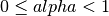

MeshFem¶
- class MeshFem(*args)¶
GeFEM MeshFem object
This object represents a finite element method defined on a whole mesh.
General constructor for MeshFem objects
MF = MeshFem(Mesh m[, int Qdim1=1[, int Qdim2=1, ...]]) Build a new MeshFem object.
The Qdim parameters specifies the dimension of the field represented by the finite element method. Qdim1 = 1 for a scalar field, Qdim1 = n for a vector field off size n, Qdim1=m, Qdim2=n for a matrix field of size mxn ... Returns the handle of the created object.
MF = MeshFem('load', string fname[, Mesh m]) Load a MeshFem from a file.
If the mesh m is not supplied (this kind of file does not store the mesh), then it is read from the file fname and its descriptor is returned as the second output argument.
MF = MeshFem('from string', string s[, Mesh m]) Create a MeshFem object from its string description.
See also MeshFem.char()
MF = MeshFem('clone', MeshFem mf) Create a copy of a MeshFem.
MF = MeshFem('sum', MeshFem mf1, MeshFem mf2[, MeshFem mf3[, ...]]) Create a MeshFem that spans two (or more) MeshFem’s.
All MeshFem must share the same mesh.
After that, you should not modify the FEM of mf1, mf2 etc.
MF = MeshFem('product', MeshFem mf1, MeshFem mf2) Create a MeshFem that spans all the product of a selection of shape functions of mf1 by all shape functions of mf2. Designed for Xfem enrichment.
mf1 and mf2 must share the same mesh.
After that, you should not modify the FEM of mf1, mf2.
MF = MeshFem('levelset', MeshLevelSet mls, MeshFem mf) Create a MeshFem that is conformal to implicit surfaces defined in MeshLevelSet.
MF = MeshFem('global function', Mesh m, LevelSet ls, (GlobalFunction GF1,...)[, int Qdim_m]) Create a MeshFem whose base functions are global function given by the user in the system of coordinate defined by the iso-values of the two level-set function of ls.
MF = MeshFem('partial', MeshFem mf, ivec DOFs[, ivec RCVs]) Build a restricted MeshFem by keeping only a subset of the degrees of freedom of mf.
If RCVs is given, no FEM will be put on the convexes listed in RCVs.
- adapt()¶
For a MeshFem levelset object only. Adapt the mesh_fem object to a change of the levelset function.
- basic_dof_from_cv(CVids)¶
Return the dof of the convexes listed in CVids.
WARNING: the Degree of Freedom might be returned in ANY order, do not use this function in your assembly routines. Use ‘basic dof from cvid’ instead, if you want to be able to map a convex number with its associated degrees of freedom.
One can also get the list of basic dof on a set on convex faces, by indicating on the second row of CVids the faces numbers (with respect to the convex number on the first row).
- basic_dof_from_cvid(CVids=None)¶
Return the degrees of freedom attached to each convex of the mesh.
If CVids is omitted, all the convexes will be considered (equivalent to CVids = 1 ... Mesh.max_cvid()).
IDx is a vector, length(IDx) = length(CVids)+1. DOFs is a vector containing the concatenated list of dof of each convex in CVids. Each entry of IDx is the position of the corresponding convex point list in DOFs. Hence, for example, the list of points of the second convex is DOFs[IDx(2):IDx(3)].
If CVids contains convex #id which do not exist in the mesh, their point list will be empty.
- basic_dof_nodes(DOFids=None)¶
Get location of basic degrees of freedom.
Return the list of interpolation points for the specified dof #IDs in DOFids (if DOFids is omitted, all basic dof are considered).
- basic_dof_on_region(Rs)¶
Return the list of basic dof (before the optional reduction) lying on one of the mesh regions listed in Rs.
More precisely, this function returns the basic dof whose support is non-null on one of regions whose #ids are listed in Rs (note that for boundary regions, some dof nodes may not lie exactly on the boundary, for example the dof of Pk(n,0) lies on the center of the convex, but the base function in not null on the convex border).
- char(opt=None)¶
Output a string description of the MeshFem.
By default, it does not include the description of the linked mesh object, except if opt is ‘with_mesh’.
- convex_index()¶
Return the list of convexes who have a FEM.
- display()¶
displays a short summary for a MeshFem object.
- dof_from_cv(CVids)¶
Deprecated function. Use MeshFem.basic_dof_from_cv() instead.
- dof_from_cvid(CVids=None)¶
Deprecated function. Use MeshFem.basic_dof_from_cvid() instead.
- dof_from_im(mim, p=None)¶
Return a selection of dof who contribute significantly to the mass-matrix that would be computed with mf and the integration method mim.
p represents the dimension on what the integration method operates (default p = mesh dimension).
IMPORTANT: you still have to set a valid integration method on the convexes which are not crosses by the levelset!
- dof_nodes(DOFids=None)¶
Deprecated function. Use MeshFem.basic_dof_nodes() instead.
- dof_on_region(Rs)¶
Return the list of dof (after the optional reduction) lying on one of the mesh regions listed in Rs.
More precisely, this function returns the basic dof whose support is non-null on one of regions whose #ids are listed in Rs (note that for boundary regions, some dof nodes may not lie exactly on the boundary, for example the dof of Pk(n,0) lies on the center of the convex, but the base function in not null on the convex border).
For a reduced mesh_fem a dof is lying on a region if its potential corresponding shape function is nonzero on this region. The extension matrix is used to make the correspondance between basic and reduced dofs.
- dof_partition()¶
Get the ‘dof_partition’ array.
Return the array which associates an integer (the partition number) to each convex of the MeshFem. By default, it is an all-zero array. The degrees of freedom of each convex of the MeshFem are connected only to the dof of neighbouring convexes which have the same partition number, hence it is possible to create partially discontinuous MeshFem very easily.
- eval(expression, gl={}, lo={})¶
interpolate an expression on the (lagrangian) MeshFem.
Examples:
mf.eval('x*y') # interpolates the function 'x*y' mf.eval('[x,y]') # interpolates the vector field '[x,y]' import numpy as np mf.eval('np.sin(x)',globals(),locals()) # interpolates the function sin(x)
- export_to_dx(filename, *args)¶
Synopsis: MeshFem.export_to_dx(self,string filename, ...[‘as’, string mesh_name][,’edges’][‘serie’,string serie_name][,’ascii’][,’append’], U, ‘name’...)
Export a MeshFem and some fields to an OpenDX file.
This function will fail if the MeshFem mixes different convex types (i.e. quads and triangles), or if OpenDX does not handle a specific element type (i.e. prism connections are not known by OpenDX).
The FEM will be mapped to order 1 Pk (or Qk) FEMs. If you need to represent high-order FEMs or high-order geometric transformations, you should consider Slice.export_to_dx().
- export_to_pos(filename, name=None, *args)¶
Synopsis: MeshFem.export_to_pos(self,string filename[, string name][[,MeshFem mf1], mat U1, string nameU1[[,MeshFem mf2], mat U2, string nameU2,...]])
Export a MeshFem and some fields to a pos file.
The FEM and geometric transformations will be mapped to order 1 isoparametric Pk (or Qk) FEMs (as GMSH does not handle higher order elements).
- export_to_vtk(filename, *args)¶
Synopsis: MeshFem.export_to_vtk(self,string filename, ... [‘ascii’], U, ‘name’...)
Export a MeshFem and some fields to a vtk file.
The FEM and geometric transformations will be mapped to order 1 or 2 isoparametric Pk (or Qk) FEMs (as VTK does not handle higher order elements). If you need to represent high-order FEMs or high-order geometric transformations, you should consider Slice.export_to_vtk().
- extend_vector(V)¶
Multiply the provided vector V with the reduction matrix of the MeshFem.
- extension_matrix()¶
Return the optional extension matrix.
- fem(CVids=None)¶
Return a list of FEM used by the MeshFem.
FEMs is an array of all Fem objects found in the convexes given in CVids. If CV2F was supplied as an output argument, it contains, for each convex listed in CVids, the index of its correspounding FEM in FEMs.
Convexes which are not part of the mesh, or convexes which do not have any FEM have their correspounding entry in CV2F set to -1.
- has_linked_mesh_levelset()¶
Is a mesh_fem_level_set or not.
- interpolate_convex_data(Ucv)¶
Interpolate data given on each convex of the mesh to the MeshFem dof. The MeshFem has to be lagrangian, and should be discontinuous (typically a FEM_PK(N,0) or FEM_QK(N,0) should be used).
The last dimension of the input vector Ucv should have Mesh.max_cvid() elements.
Example of use: MeshFem.interpolate_convex_data(Mesh.quality())
- is_equivalent(CVids=None)¶
Test if the MeshFem is equivalent.
See MeshFem.is_lagrangian()
- is_lagrangian(CVids=None)¶
Test if the MeshFem is Lagrangian.
Lagrangian means that each base function Phi[i] is such that Phi[i](P[j]) = delta(i,j), where P[j] is the dof location of the jth base function, and delta(i,j) = 1 if i==j, else 0.
If CVids is omitted, it returns 1 if all convexes in the mesh are Lagrangian. If CVids is used, it returns the convex indices (with respect to CVids) which are Lagrangian.
- is_polynomial(CVids=None)¶
Test if all base functions are polynomials.
See MeshFem.is_lagrangian()
- is_reduced()¶
Return 1 if the optional reduction matrix is applied to the dofs.
- linked_mesh()¶
Return a reference to the Mesh object linked to mf.
- linked_mesh_levelset()¶
if it is a mesh_fem_level_set gives the linked mesh_level_set.
- memsize()¶
Return the amount of memory (in bytes) used by the mesh_fem object.
The result does not take into account the linked mesh object.
- mesh()¶
Return a reference to the Mesh object linked to mf. (identical to Mesh.linked_mesh())
- nb_basic_dof()¶
Return the number of basic degrees of freedom (dof) of the MeshFem.
- nbdof()¶
Return the number of degrees of freedom (dof) of the MeshFem.
- non_conformal_basic_dof(CVids=None)¶
Return partially linked degrees of freedom.
Return the basic dof located on the border of a convex and which belong to only one convex, except the ones which are located on the border of the mesh. For example, if the convex ‘a’ and ‘b’ share a common face, ‘a’ has a P1 FEM, and ‘b’ has a P2 FEM, then the basic dof on the middle of the face will be returned by this function (this can be useful when searching the interfaces between classical FEM and hierarchical FEM).
- non_conformal_dof(CVids=None)¶
Deprecated function. Use MeshFem.non_conformal_basic_dof() instead.
- qdim()¶
Return the dimension Q of the field interpolated by the MeshFem.
By default, Q=1 (scalar field). This has an impact on the dof numbering.
- reduce_meshfem(RM)¶
Set reduction mesh fem This function selects the degrees of freedom of the finite element method by selecting a set of independent vectors of the matrix RM. The numer of columns of RM should corresponds to the number of degrees of fredoom of the finite element method.
- reduce_vector(V)¶
Multiply the provided vector V with the extension matrix of the MeshFem.
- reduction(s)¶
Set or unset the use of the reduction/extension matrices.
- reduction_matrices(R, E)¶
Set the reduction and extension matrices and valid their use.
- reduction_matrix()¶
Return the optional reduction matrix.
- save(filename, opt=None)¶
Save a MeshFem in a text file (and optionaly its linked mesh object if opt is the string ‘with_mesh’).
- set_classical_discontinuous_fem(k, *args)¶
Synopsis: MeshFem.set_classical_discontinuous_fem(self, int k[[, ‘complete’], @tscalar alpha[, ivec CVIDX]])
Assigns a classical (Lagrange polynomial) discontinuous fem of order k.
Similar to MeshFem.set_classical_fem() except that FEM_PK_DISCONTINUOUS is used. Param alpha the node inset, , where 0 implies usual dof nodes, greater values move the nodes toward the center of gravity, and 1 means that all degrees of freedom collapse on the center of gravity. The option ‘complete’ requests complete Langrange polynomial elements, even if the element geometric transformation is an incomplete one (e.g. 8-node quadrilateral or 20-node hexahedral).
- set_classical_fem(k, *args)¶
Synopsis: MeshFem.set_classical_fem(self, int k[[, ‘complete’], ivec CVids])
Assign a classical (Lagrange polynomial) fem of order k to the MeshFem. The option ‘complete’ requests complete Langrange polynomial elements, even if the element geometric transformation is an incomplete one (e.g. 8-node quadrilateral or 20-node hexahedral).
Uses FEM_PK for simplexes, FEM_QK for parallelepipeds etc.
- set_dof_partition(DOFP)¶
Change the ‘dof_partition’ array.
DOFP is a vector holding a integer value for each convex of the MeshFem. See MeshFem.dof_partition() for a description of “dof partition”.
- set_enriched_dofs(DOFs)¶
For a MeshFem product object only. Set te enriched dofs and adapt the MeshFem product.
- set_fem(f, CVids=None)¶
Set the Finite Element Method.
Assign a FEM f to all convexes whose #ids are listed in CVids. If CVids is not given, the integration is assigned to all convexes.
See the help of Fem to obtain a list of available FEM methods.
- set_partial(DOFs, RCVs=None)¶
Can only be applied to a partial MeshFem. Change the subset of the degrees of freedom of mf.
If RCVs is given, no FEM will be put on the convexes listed in RCVs.
- set_qdim(Q)¶
Change the Q dimension of the field that is interpolated by the MeshFem.
Q = 1 means that the MeshFem describes a scalar field, Q = N means that the MeshFem describes a vector field of dimension N.

前のトピックへ
次のトピックへ
Download
Main documentations
- GetFEM++ User documentation
- Python Interface
- Matlab Interface
- Scilab Interface
- Gmm++
- GetFEM++ project